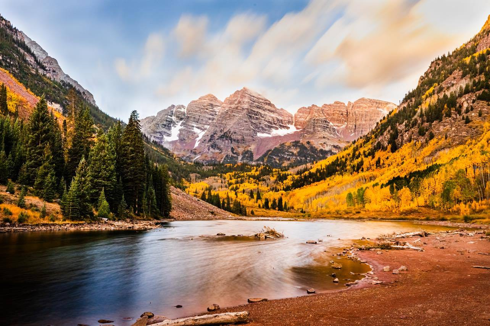
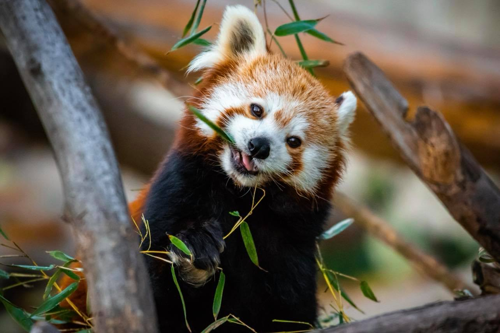
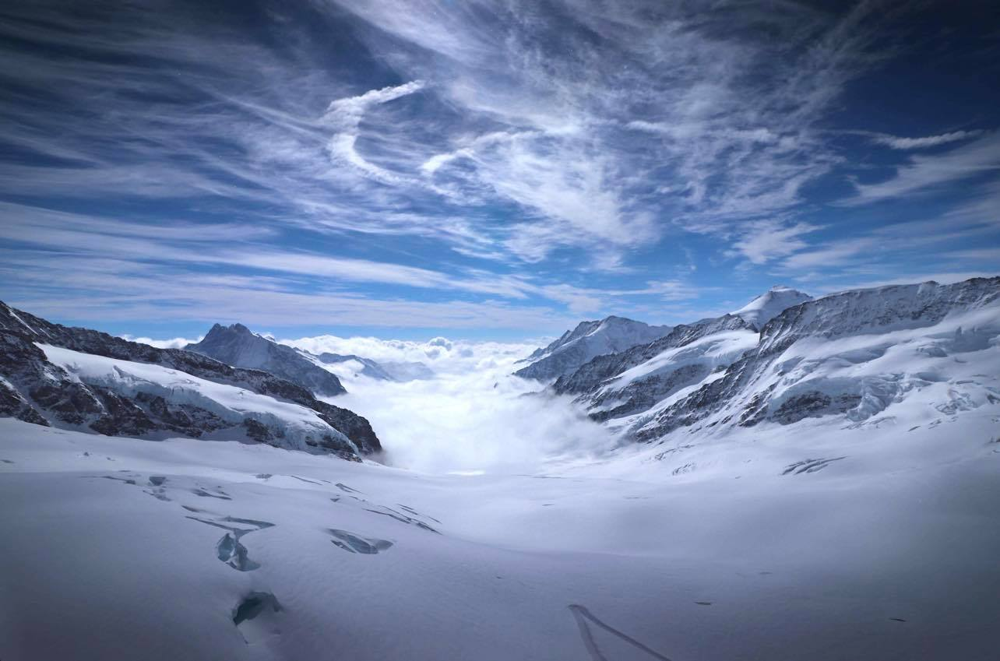

As a break from the hustle and bustle of urban life, I love escaping to nature to photograph interesting landscapes and animals.
Below are some of my favorites.
|  | The Maroon Bells, near Aspen, Colorado |
| A red panda at the St. Louis Zoo |  |
|  | Jungfraujoch, in the Swiss Alps near Interlaken, Switzerland |